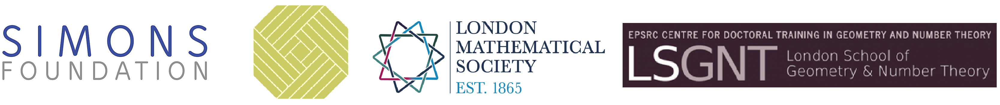

Description
The BIG Workshop: Geometric flows and related topics is held 3-7 July 2023 in Inverness. It is targeted at PhD students and postdocs but open for application from all. The goal is for junior researchers to work together with experienced mentors for a week. The format of the workshop is that three mentors propose three topics, split into six talks each. Participants sign up to give the talks. The atmosphere during the workshop is supportive, encouraging, and collaborative. The meeting is scheduled to take place before the ICMS workshop on Geometric Flows and Applications in Edinburgh, but the two events are not officially related to each other.
The meeting is held in-person only (no online option), and we aim to have around 30 participants. We will cover for accommodation and full board at the Inverness Youth Hostel for all participants from Sunday afternoon to Saturday morning. Participants are expected to pay a 100 GBP registration fee as a contribution to the accomodation and substenance expenses.
Limited travel funding is available. If you require travel funding, please let us know during the application.
Update 31 May 2023: You can find the program of the workshop here. All participants have been sent an invitation to nominate themselves to give one of the talks from the program. If you are a participant but have not received the invitation, please reach out to the organisers as soon as possible.
Update 6 Jun 2023: You can find the schedule of the workshop here.
Update 4 Jul 2023: Group photo
{kind=link}
Mentors
The mentors for BIGW IV are
- Anna Fino, professor at Università di Torino (website)
- Anusha M. Krishnan, postdoc at Westfälische Wilhelms-Universität Münster (website)
- Ben Lambert, Lecturer at University of Leeds (website)
Registration
Applications are now closed.
Contact
In case of questions, please contact Enric Sole Farre in the first instance. The other organisers are Nicolas Manrique, Daniel Platt, Ragini Singhal, Jakob Stein.
Previous editions
- BIGW IV (cancelled): Calibrated Geometry and Geometric PDEs (archive version)
- BIGW III: Gauge Theory with a View to Higher Dimensions (archive version)
- BIGW II: Singularities and Symplectic Topology (archive version)
- BIGW I: Higgs bundles: algebraic and differential geometric perspectives (archive version)
Sponsors
We gratefully acknowledge funding from the following instiutions:
- Simons Collaboration for Special Holonomy in Geometry, Analysis, and Physics
- Foundation Compositio Mathematica
- London Mathematical Society
- London School of Number Theory and Geometry
